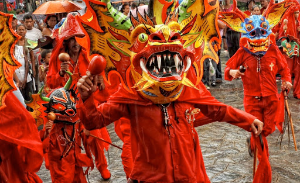
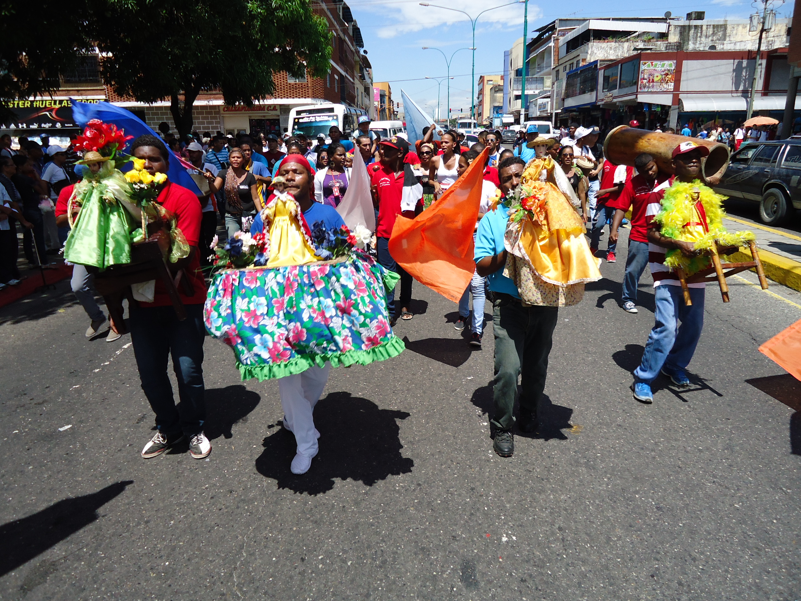
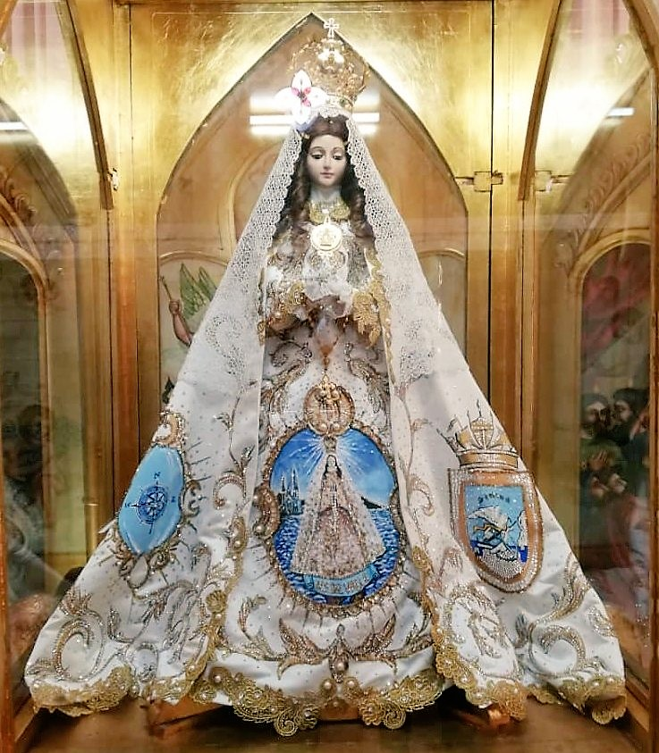
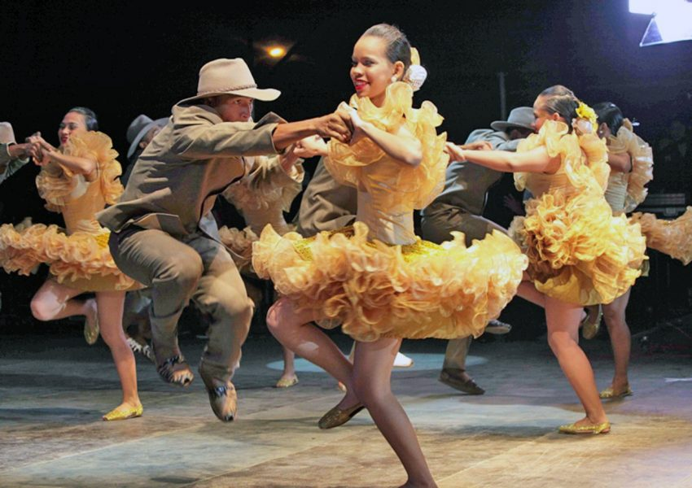
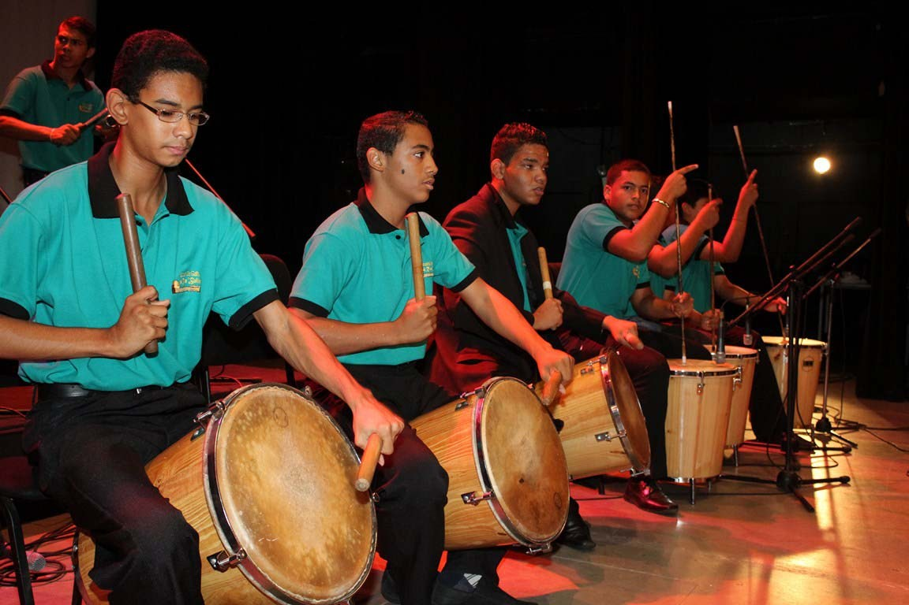
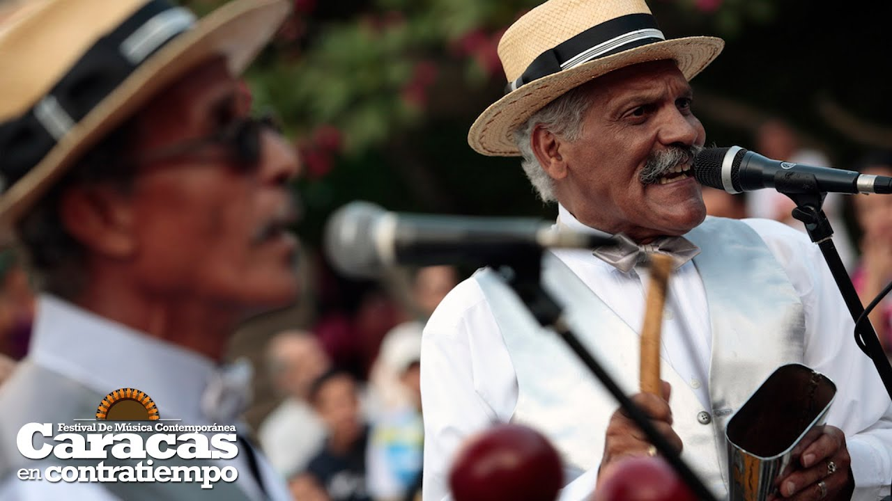

Los Diablos de Yaré
En las zonas costeras de la República Bolivariana de Venezuela hay una influencia africana que se manifiesta en las danzas típicas de la región. La festividad del Corpus Christi es una celebración conocida popularmente a través del ritual mágico-religioso de los Diablos Danzantes de Yare, que se celebra desde el siglo XVIII en San Francisco de Yare, estado Miranda. Lo más emocionante de la jornada es ver a los Diablos danzar al son del repique de la caja, un tambor típico. Bailan por las calles del pueblo para luego arrodillarse al unísono frente a la iglesia, permaneciendo postrados en señal de respeto al Santísimo sacramento mientras el sacerdote los bendice.
Baile de San Juan
Los golpes de tambor son muy representativos de los pueblos de las costas venezolanas, especialmente de los estados Vargas, Aragua, Miranda y Carabobo. Se realizan, por lo general, en las festividades dedicadas a los santos patronos, especialmente a San Juan Bautista, el 23 y 24 de junio, fecha de la llegada definitiva de las lluvias y el día mas largo del año. San Juan Bautista es conocido como el santo del ritmo y del tambor. Se trata de la celebración del nacimiento del santo, (único santo junto con el Niño Jesús al que se le celebra el nacimiento) y reúne quizás la mayor cantidad de creyentes y devotos, en esta celebración se tocan el tambor Mina y la Curbata (tambor largo hecho de un tronco de árbol totalmente cilíndrico).
Virgen del Valle
En el estado Nueva Esparta, las grandes festividades de Margarita tienen lugar entre el 8 y el 15 de septiembre y corresponden a los festejos de la Virgen del Valle, patrona de la isla. A esta romería que tiene lugar en la población de El Valle del Espíritu Santo, acuden margariteños y devotos desde todos los lugares de la República Bolivariana de Venezuela a pagar las promesas hechas a la Virgen.
Joropo
El baile nacional es el joropo y sus respectivos instrumentos musicales populares, son el cuatro, la bandola, el arpa y las maracas. Estos se asocian a los modos de vida (folclor) del país. Junto al joropo, destacan amplios repertorios de ritmos y melodías que dan cuenta de las tradiciones y raíces del llanero. Entre ellos están: los golpes, los pasajes, los corridos, las tonadas y el contrapunteo.
La Gaita Zuliana
Como muchas otras manifestaciones del costumbrismo latinoamericano, es mestiza. La gaita es el ritmo característico del estado Zulia, que se ha transformado en la música típica de la navidad venezolana, tiene sus orígenes en diferentes géneros y posee un ritmo muy particular. Sus letras van desde plegarias y agradecimientos religiosos, pasando por pasajes de amores y desamores, hasta la protesta política. Los instrumentos necesarios para tocar la gaita son el cuatro, la tambora, la charrasca y el furruco.
Merengue
Genero musical bailable característico de la ciudad de Caracas, pero extendido a otras regiones del país, donde adquiere características propias. Se ejecuta con cuatro instrumentos solistas: trompeta, trombón, saxo y clarinete, acompañados por el cuatro, el bajo y la percusión. Las letras de este género se refieren a temas diversos como el amor, la mujer, la cotidianidad y los grandes acontecimientos del país. Cabe destacar que el merengue sirvió de vehículo a la crítica social.